Grouping
Chapter Goals:
• Learn how to group DataFrames by columns
• Write code to retrieve home run statistics through DataFrame grouping
~~~~~~~~~~~~~~~~~~~~~~~~~~~~~~~~~
Grouping by columns
When dealing with large amounts of data, it is usually a good idea to group the data by common categories.
For example, we could group a large dataset of MLB player statistics by year, so we can deal with each year's data separately.
With pandas DataFrames, we can perform dataset grouping with the
groupby function. A common usage of the function is to group a DataFrame by values from a particular column, e.g. a column representing years.
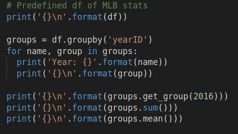 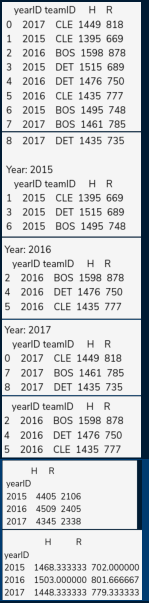
The grouping code example produced three DataFrames for the years 2015, 2016, and 2017. The three DataFrame groups are contained in the
groups variable, and we used its
sum and
mean functions to retrieve the total and average per-year statistics.
In addition to aggregation functions like
sum and
mean, we can also filter the groups using
filter. The
filter function takes in another function as its required argument, which specifies how we want to filter the groups. The output of
filter is the concatenation of all the groups that pass the filter.
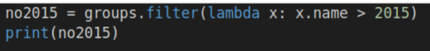 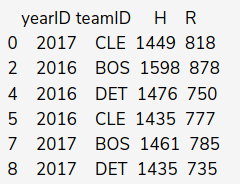
In the above code example, the lambda function passed into
filter returns
True if the group (represented as
x) represents a year greater than 2015. The output is the concatenation of the 2016 and 2017 groups.
~~~~~~~~~~~~~~~~~~~~~~~~~~~~~~~~~
Multiple Columns
DataFrame grouping is not just limited to a single column. Rather than passing a single column label into
groupby, we can use a list of column labels to specify grouping by multiple columns.
Grouping by multiple columns can be useful when multiple data features have many different values.For example, if our dataset consisted of MLB players, grouping by both team and year would give us an organized way to view a team's roster throughout the years.
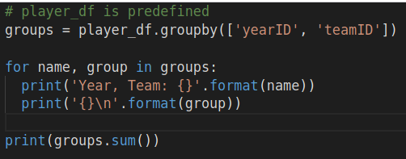 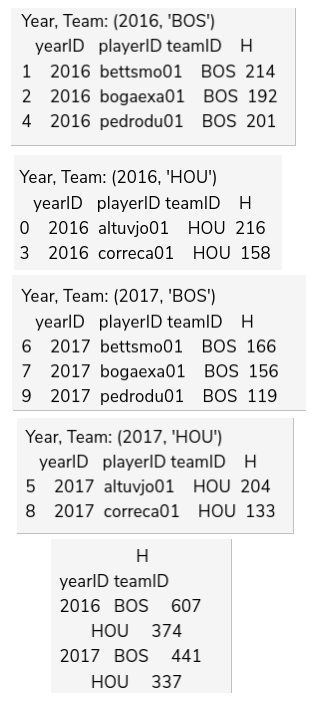
In the code above, we grouped the MLB data by both year and team, resulting in each group's name being a tuple of year and team. Using the
sum function, we obtained the annual total hits for each team.
~~~~~~~~~~~~~~~~~~~~~~~~~~~~~~~~~
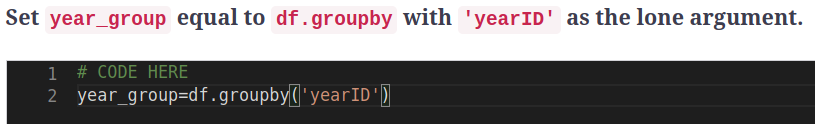
~~~~~~~~~~~~~~~~~~~~~~~~~~~~~~~~~
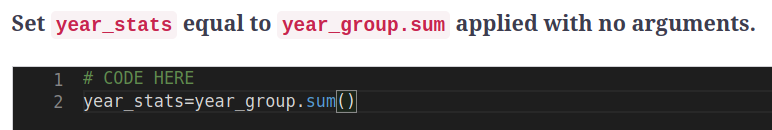
~~~~~~~~~~~~~~~~~~~~~~~~~~~~~~~~~
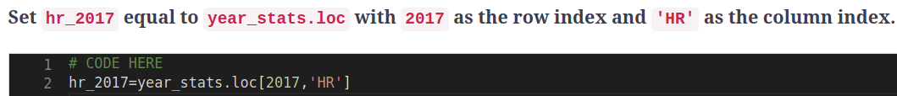
~~~~~~~~~~~~~~~~~~~~~~~~~~~~~~~~~
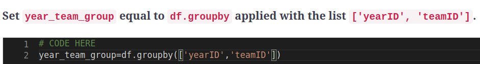
~~~~~~~~~~~~~~~~~~~~~~~~~~~~~~~~~
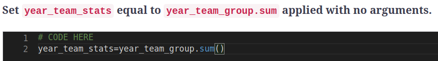